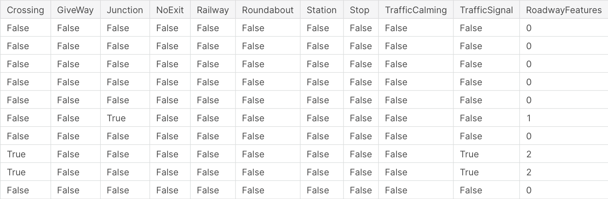

Feature engineering¶
We hebben de data nu bekeken en hebben alle data die niet ok was verwijderd nu komen we aan een stap waar we met domain kennis gaan proberen om extra features te gaan aanmaken.
Het doel van feature engineering is om uw gegevens beter af te stemmen op het probleem.
Metingen van “schijnbare temperatuur”, zoals de hitte-index en de gevoelstemperatuur. Deze grootheden proberen de waargenomen temperatuur voor mensen te meten op basis van luchttemperatuur, vochtigheid en windsnelheid, dingen die we direct kunnen meten. Je zou een schijnbare temperatuur kunnen zien als het resultaat van een soort feature-engineering, een poging om de waargenomen gegevens relevanter te maken voor waar we echt om geven: hoe het werkelijk buiten aanvoelt!
Features combineren¶
We kunnen features wiskundig gaan combineren of features zelf onderwerpen aan een wiskundige operatie. Als we bijvoorbeeld ergens lengte hebben dan kunnen we opervlakte gaan berekenen om zo misschien toch lineaire relaties blood te leggen met de target variabele.
from pathlib import Path
# Installed packages
import pandas as pd
import numpy as np
from pandas_profiling.utils.cache import cache_file
# Read car dataset
file_name = cache_file(
"cars.csv",
"https://raw.githubusercontent.com/sanithps98/Automobile-Dataset-Analysis/master/module_5_auto.csv",
)
autos = pd.read_csv(file_name)
autos.head()
| Unnamed: 0 | Unnamed: 0.1 | symboling | normalized-losses | make | aspiration | num-of-doors | body-style | drive-wheels | engine-location | ... | compression-ratio | horsepower | peak-rpm | city-mpg | highway-mpg | price | city-L/100km | horsepower-binned | diesel | gas | |
|---|---|---|---|---|---|---|---|---|---|---|---|---|---|---|---|---|---|---|---|---|---|
| 0 | 0 | 0 | 3 | 122 | alfa-romero | std | two | convertible | rwd | front | ... | 9.0 | 111.0 | 5000.0 | 21 | 27 | 13495.0 | 11.190476 | Medium | 0 | 1 |
| 1 | 1 | 1 | 3 | 122 | alfa-romero | std | two | convertible | rwd | front | ... | 9.0 | 111.0 | 5000.0 | 21 | 27 | 16500.0 | 11.190476 | Medium | 0 | 1 |
| 2 | 2 | 2 | 1 | 122 | alfa-romero | std | two | hatchback | rwd | front | ... | 9.0 | 154.0 | 5000.0 | 19 | 26 | 16500.0 | 12.368421 | Medium | 0 | 1 |
| 3 | 3 | 3 | 2 | 164 | audi | std | four | sedan | fwd | front | ... | 10.0 | 102.0 | 5500.0 | 24 | 30 | 13950.0 | 9.791667 | Medium | 0 | 1 |
| 4 | 4 | 4 | 2 | 164 | audi | std | four | sedan | 4wd | front | ... | 8.0 | 115.0 | 5500.0 | 18 | 22 | 17450.0 | 13.055556 | Medium | 0 | 1 |
5 rows × 31 columns
autos["stroke_ratio"] = autos.stroke / autos.bore
autos[["stroke", "bore", "stroke_ratio"]].head()
| stroke | bore | stroke_ratio | |
|---|---|---|---|
| 0 | 2.68 | 3.47 | 0.772334 |
| 1 | 2.68 | 3.47 | 0.772334 |
| 2 | 3.47 | 2.68 | 1.294776 |
| 3 | 3.40 | 3.19 | 1.065831 |
| 4 | 3.40 | 3.19 | 1.065831 |
We kunnen zelfs verder gaan en gekende formules gaan toepassen. Vandaar dat hier domein kennis cruciaal zal zijn.
Tellen¶
We kunnen verschillende features met elkaar gaan combineren om tot een iets algemener feature te komen te komen.
roadway_features = ["Amenity", "Bump", "Crossing", "GiveWay",
"Junction", "NoExit", "Railway", "Roundabout", "Station", "Stop",
"TrafficCalming", "TrafficSignal"]
accidents["RoadwayFeatures"] = accidents[roadway_features].sum(axis=1)

Groeperen¶
We kunnen data per rij gaan groeperen en daar aggregaties op gaan toepassen.
Geospatial features¶
Bijvoorbeeld de gemiddelde verkoopwaarden van een huis binnen een regio kan zo een feature zijn.
Temporal features¶
Bijvoorbeeld aankoop transactie gaan groeperen per week en als kolom voorzien tijdstip-week.
# Standard Library Imports
from pathlib import Path
import pandas as pd
from pandas_profiling.utils.cache import cache_file
# Read the Titanic Dataset
file_name = cache_file(
"titanic.csv",
"https://raw.githubusercontent.com/datasciencedojo/datasets/master/titanic.csv",
)
titanic = pd.read_csv(file_name)
from pycaret.classification import *
clf1 = setup(titanic, target = 'Survived', silent=True, session_id=123, log_experiment=False, experiment_name='Survived')
X = get_config('X')
X
---------------------------------------------------------------------------
RuntimeError Traceback (most recent call last)
RuntimeError: module compiled against API version 0xe but this version of numpy is 0xd
---------------------------------------------------------------------------
ImportError Traceback (most recent call last)
/tmp/ipykernel_2012/1705947710.py in <module>
12 titanic = pd.read_csv(file_name)
13
---> 14 from pycaret.classification import *
15
16 clf1 = setup(titanic, target = 'Survived', silent=True, session_id=123, log_experiment=False, experiment_name='Survived')
/opt/hostedtoolcache/Python/3.7.11/x64/lib/python3.7/site-packages/pycaret/classification.py in <module>
8 import numpy as np
9
---> 10 import pycaret.internal.tabular
11 from pycaret.internal.Display import Display, is_in_colab, enable_colab
12 from typing import List, Tuple, Any, Union, Optional, Dict
/opt/hostedtoolcache/Python/3.7.11/x64/lib/python3.7/site-packages/pycaret/internal/tabular.py in <module>
45 import pycaret.containers.models.clustering
46 import pycaret.containers.models.anomaly
---> 47 import pycaret.internal.preprocess
48 import pandas as pd
49 import numpy as np
/opt/hostedtoolcache/Python/3.7.11/x64/lib/python3.7/site-packages/pycaret/internal/preprocess.py in <module>
25 from sklearn.decomposition import IncrementalPCA
26 from sklearn.preprocessing import KBinsDiscretizer
---> 27 from pyod.models.knn import KNN
28 from pyod.models.iforest import IForest
29 from pyod.models.pca import PCA as PCA_od
/opt/hostedtoolcache/Python/3.7.11/x64/lib/python3.7/site-packages/pyod/__init__.py in <module>
2
3 from . import models
----> 4 from . import utils
5 # TODO: add version information here
6
/opt/hostedtoolcache/Python/3.7.11/x64/lib/python3.7/site-packages/pyod/utils/__init__.py in <module>
9 from .data import generate_data
10 from .data import evaluate_print
---> 11 from .stat_models import pairwise_distances_no_broadcast
12 from .stat_models import wpearsonr
13 from .stat_models import pearsonr_mat
/opt/hostedtoolcache/Python/3.7.11/x64/lib/python3.7/site-packages/pyod/utils/stat_models.py in <module>
9
10 import numpy as np
---> 11 from numba import njit
12 from scipy.stats import pearsonr
13 from sklearn.utils.validation import check_array
/opt/hostedtoolcache/Python/3.7.11/x64/lib/python3.7/site-packages/numba/__init__.py in <module>
37
38 # Re-export decorators
---> 39 from numba.core.decorators import (cfunc, generated_jit, jit, njit, stencil,
40 jit_module)
41
/opt/hostedtoolcache/Python/3.7.11/x64/lib/python3.7/site-packages/numba/core/decorators.py in <module>
10
11 from numba.core.errors import DeprecationError, NumbaDeprecationWarning
---> 12 from numba.stencils.stencil import stencil
13 from numba.core import config, extending, sigutils, registry
14
/opt/hostedtoolcache/Python/3.7.11/x64/lib/python3.7/site-packages/numba/stencils/stencil.py in <module>
9 from llvmlite import ir as lir
10
---> 11 from numba.core import types, typing, utils, ir, config, ir_utils, registry
12 from numba.core.typing.templates import (CallableTemplate, signature,
13 infer_global, AbstractTemplate)
/opt/hostedtoolcache/Python/3.7.11/x64/lib/python3.7/site-packages/numba/core/ir_utils.py in <module>
14
15 import numba
---> 16 from numba.core.extending import _Intrinsic
17 from numba.core import types, utils, typing, ir, analysis, postproc, rewrites, config, cgutils
18 from numba.core.typing.templates import (signature, infer_global,
/opt/hostedtoolcache/Python/3.7.11/x64/lib/python3.7/site-packages/numba/core/extending.py in <module>
17 from numba.core.datamodel import models # noqa: F401
18 from numba.core.datamodel import register_default as register_model # noqa: F401, E501
---> 19 from numba.core.pythonapi import box, unbox, reflect, NativeValue # noqa: F401
20 from numba._helperlib import _import_cython_function # noqa: F401
21 from numba.core.serialize import ReduceMixin
/opt/hostedtoolcache/Python/3.7.11/x64/lib/python3.7/site-packages/numba/core/pythonapi.py in <module>
10
11 import ctypes
---> 12 from numba import _helperlib
13 from numba.core import (
14 types, utils, config, lowering, cgutils, imputils, serialize,
ImportError: numpy.core.multiarray failed to import
titanic.drop(columns="Name",inplace=True)
clf1 = setup(titanic, target = 'Survived', silent=True, session_id=123, log_experiment=False, experiment_name='Survived', ordinal_features = {'Embarked' :['S', 'C', 'Q']})
X = get_config('X')
X
| Description | Value | |
|---|---|---|
| 0 | session_id | 123 |
| 1 | Target | Survived |
| 2 | Target Type | Binary |
| 3 | Label Encoded | 0: 0, 1: 1 |
| 4 | Original Data | (891, 11) |
| 5 | Missing Values | True |
| 6 | Numeric Features | 3 |
| 7 | Categorical Features | 7 |
| 8 | Ordinal Features | True |
| 9 | High Cardinality Features | False |
| 10 | High Cardinality Method | None |
| 11 | Transformed Train Set | (623, 566) |
| 12 | Transformed Test Set | (268, 566) |
| 13 | Shuffle Train-Test | True |
| 14 | Stratify Train-Test | False |
| 15 | Fold Generator | StratifiedKFold |
| 16 | Fold Number | 10 |
| 17 | CPU Jobs | -1 |
| 18 | Use GPU | False |
| 19 | Log Experiment | False |
| 20 | Experiment Name | Survived |
| 21 | USI | 990e |
| 22 | Imputation Type | simple |
| 23 | Iterative Imputation Iteration | None |
| 24 | Numeric Imputer | mean |
| 25 | Iterative Imputation Numeric Model | None |
| 26 | Categorical Imputer | constant |
| 27 | Iterative Imputation Categorical Model | None |
| 28 | Unknown Categoricals Handling | least_frequent |
| 29 | Normalize | False |
| 30 | Normalize Method | None |
| 31 | Transformation | False |
| 32 | Transformation Method | None |
| 33 | PCA | False |
| 34 | PCA Method | None |
| 35 | PCA Components | None |
| 36 | Ignore Low Variance | False |
| 37 | Combine Rare Levels | False |
| 38 | Rare Level Threshold | None |
| 39 | Numeric Binning | False |
| 40 | Remove Outliers | False |
| 41 | Outliers Threshold | None |
| 42 | Remove Multicollinearity | False |
| 43 | Multicollinearity Threshold | None |
| 44 | Remove Perfect Collinearity | True |
| 45 | Clustering | False |
| 46 | Clustering Iteration | None |
| 47 | Polynomial Features | False |
| 48 | Polynomial Degree | None |
| 49 | Trignometry Features | False |
| 50 | Polynomial Threshold | None |
| 51 | Group Features | False |
| 52 | Feature Selection | False |
| 53 | Feature Selection Method | classic |
| 54 | Features Selection Threshold | None |
| 55 | Feature Interaction | False |
| 56 | Feature Ratio | False |
| 57 | Interaction Threshold | None |
| 58 | Fix Imbalance | False |
| 59 | Fix Imbalance Method | SMOTE |
| Age | Fare | Embarked | Pclass_1 | Pclass_2 | Pclass_3 | Sex_male | SibSp_0 | SibSp_1 | SibSp_2 | ... | Cabin_E68 | Cabin_E77 | Cabin_E8 | Cabin_F E69 | Cabin_F2 | Cabin_F33 | Cabin_F4 | Cabin_G6 | Cabin_T | Cabin_not_available | |
|---|---|---|---|---|---|---|---|---|---|---|---|---|---|---|---|---|---|---|---|---|---|
| 0 | 22.000000 | 7.250000 | 1.0 | 0.0 | 0.0 | 1.0 | 1.0 | 0.0 | 1.0 | 0.0 | ... | 0.0 | 0.0 | 0.0 | 0.0 | 0.0 | 0.0 | 0.0 | 0.0 | 0.0 | 1.0 |
| 1 | 38.000000 | 71.283302 | 2.0 | 1.0 | 0.0 | 0.0 | 0.0 | 0.0 | 1.0 | 0.0 | ... | 0.0 | 0.0 | 0.0 | 0.0 | 0.0 | 0.0 | 0.0 | 0.0 | 0.0 | 0.0 |
| 2 | 26.000000 | 7.925000 | 1.0 | 0.0 | 0.0 | 1.0 | 0.0 | 1.0 | 0.0 | 0.0 | ... | 0.0 | 0.0 | 0.0 | 0.0 | 0.0 | 0.0 | 0.0 | 0.0 | 0.0 | 1.0 |
| 3 | 35.000000 | 53.099998 | 1.0 | 1.0 | 0.0 | 0.0 | 0.0 | 0.0 | 1.0 | 0.0 | ... | 0.0 | 0.0 | 0.0 | 0.0 | 0.0 | 0.0 | 0.0 | 0.0 | 0.0 | 0.0 |
| 4 | 35.000000 | 8.050000 | 1.0 | 0.0 | 0.0 | 1.0 | 1.0 | 1.0 | 0.0 | 0.0 | ... | 0.0 | 0.0 | 0.0 | 0.0 | 0.0 | 0.0 | 0.0 | 0.0 | 0.0 | 1.0 |
| ... | ... | ... | ... | ... | ... | ... | ... | ... | ... | ... | ... | ... | ... | ... | ... | ... | ... | ... | ... | ... | ... |
| 886 | 27.000000 | 13.000000 | 1.0 | 0.0 | 1.0 | 0.0 | 1.0 | 1.0 | 0.0 | 0.0 | ... | 0.0 | 0.0 | 0.0 | 0.0 | 0.0 | 0.0 | 0.0 | 0.0 | 0.0 | 1.0 |
| 887 | 19.000000 | 30.000000 | 1.0 | 1.0 | 0.0 | 0.0 | 0.0 | 1.0 | 0.0 | 0.0 | ... | 0.0 | 0.0 | 0.0 | 0.0 | 0.0 | 0.0 | 0.0 | 0.0 | 0.0 | 0.0 |
| 888 | 29.885691 | 23.450001 | 1.0 | 0.0 | 0.0 | 1.0 | 0.0 | 0.0 | 1.0 | 0.0 | ... | 0.0 | 0.0 | 0.0 | 0.0 | 0.0 | 0.0 | 0.0 | 0.0 | 0.0 | 1.0 |
| 889 | 26.000000 | 30.000000 | 2.0 | 1.0 | 0.0 | 0.0 | 1.0 | 1.0 | 0.0 | 0.0 | ... | 0.0 | 0.0 | 0.0 | 0.0 | 0.0 | 0.0 | 0.0 | 0.0 | 0.0 | 0.0 |
| 890 | 32.000000 | 7.750000 | 3.0 | 0.0 | 0.0 | 1.0 | 1.0 | 1.0 | 0.0 | 0.0 | ... | 0.0 | 0.0 | 0.0 | 0.0 | 0.0 | 0.0 | 0.0 | 0.0 | 0.0 | 1.0 |
891 rows × 566 columns
(WIP) Dimension reduction¶
Met clustering is het mogelijk om features met elkaar te verbinden.